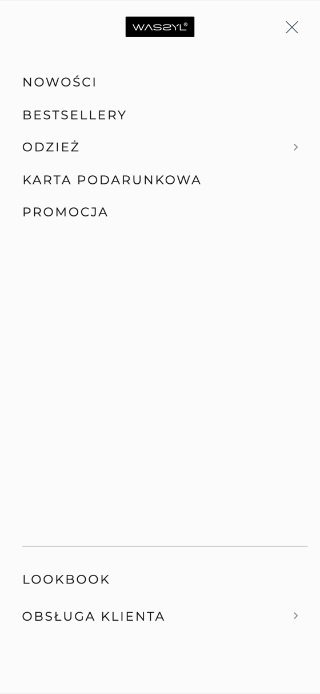
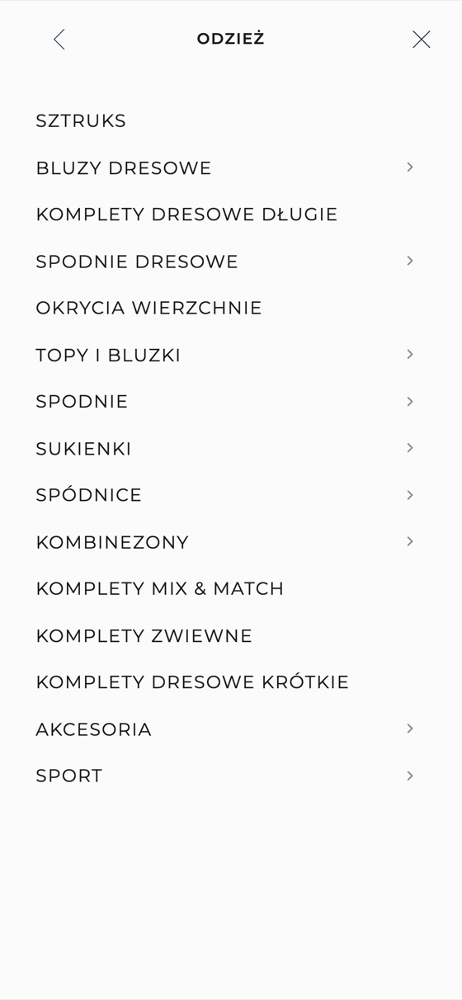
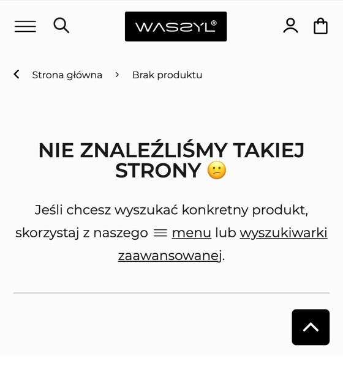
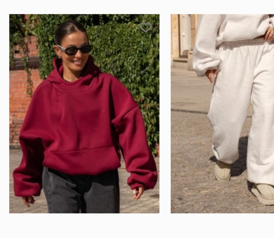
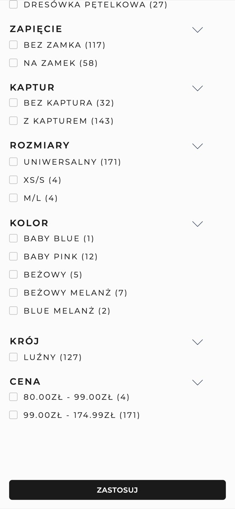
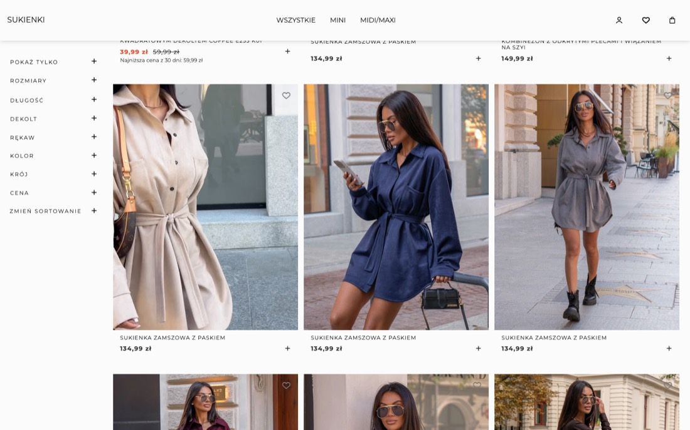
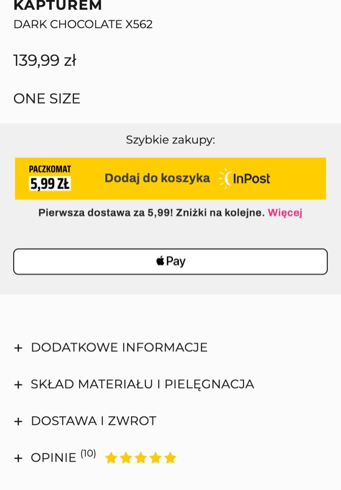
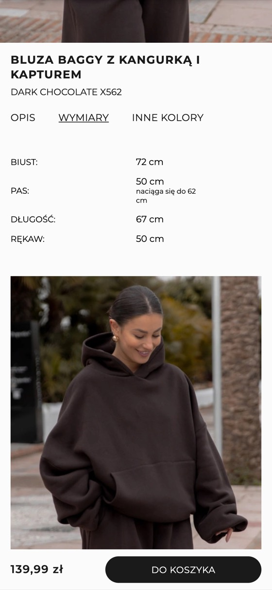
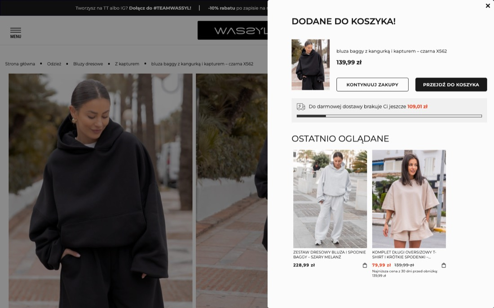
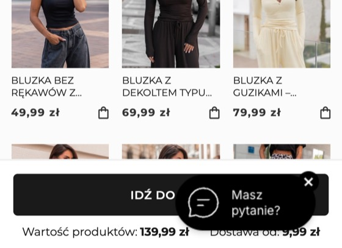

Propozycja współpracy · migracja i nowy sklep
Odświeżony design, wygodny telefon i funkcje, które podnoszą wartość koszyka. Przygotowałem ten dokument jako Wasz klient i jako developer Shopify: opisuję, co sam przeszedłem w sklepie, co pokazał audyt i jak to rozwiązać przy przenosinach z IdoSell.
Skąd ta propozycja
Zamawiałem w WASSYL kilka razy: dwa komplety dresowe (szary i czarny), a potem prezenty dla mojej dziewczyny. Jedno z tych zamówień wyglądało tak:
Za każdym razem kupowałem na telefonie i za każdym razem było trudno. Menu nie pokazuje typów ubrań od razu, komplety są w kilku różnych miejscach, a żeby znaleźć konkretną bluzę albo spodnie, trzeba się naklikać. Wracam, bo znam Waszą jakość i wiem, że warto się przemęczyć.
Nowa klientka, która trafia do Was z TikToka, tej wiedzy jeszcze nie ma. Jeśli w pierwszej minucie nie znajdzie kompletu i nie zobaczy, ile kosztuje dostawa, po prostu zamknie kartę.
ruchu w sklepach odzieżowych i retailu w 2025 roku pochodziło z telefonów
Contentsquare, 2026 Digital Experience Benchmarkspolskich kupujących online robi zakupy na smartfonie, a około 7 na 10 z nich ma przy tym trudności
Gemius, E-commerce w Polsce 2024koszyków w e-commerce zostaje porzuconych; lepszy projekt koszyka i kasy może podnieść konwersję dużego sklepu o 35%
Baymard Institute, 2025 (średnia z 50 badań)Co zostaje
Nowy sklep nie zaczyna od zera. Te elementy działają dobrze i w nowej wersji zostaną albo zostaną wzmocnione:
Audyt · szybkość
PageSpeed Insights to narzędzie Google, które ocenia szybkość strony w skali 0 do 100. Wynik poniżej 50 Google oznacza jako słaby. Zmierzyłem trzy najważniejsze typy stron:
Audyt · problemy i rozwiązania
Przeszedłem sklep tak jak klientka: od strony głównej, przez menu i wyszukiwarkę, listy kategorii, karty produktów, aż do kasy (bez składania zamówienia). Każdy problem ma zrzut ekranu albo pomiar. Przy każdym podaję, co widać, jak wpływa na sprzedaż (z badaniem, jeśli takie istnieje) i jak go rozwiążę.
Waga: wysoka dotyczy większości klientek i blokuje zakup, średnia utrudnia go, drobna obniża zaufanie.


Telefon: pierwszy poziom menu i lista „Odzież”
Telefon: wynik dla „bluza bagy”
Telefon: karuzela produktów bez nazw i cen
Telefon: filtry na liście bluz
Komputer: lista sukienek, ta sama nazwa w kolejnych kolorach
Telefon: sekcja zakupu bluzy X562, dostawa schowana w zakładce
Telefon: zakładka „Wymiary” bluzy X562
Komputer: okno po dodaniu bluzy X562
Telefon: koszyk, przycisk przejścia do kasyFunkcje podnoszące sprzedaż
Poza naprawą problemów proponuję funkcje dopasowane do tego, jak sprzedajecie: komplety, jeden rozmiar, dużo wideo i ruch z TikToka.
Na karcie bluzy od razu spodnie w tym samym kolorze, dodawane jednym kliknięciem, z ceną zestawu. To samo w oknie koszyka po dodaniu produktu.
Bluza 139,99 zł + spodnie z kompletu przekraczają próg darmowej dostawy 249 zł.
Pasek „brakuje Ci X zł” z 2-3 tańszymi produktami, które domykają próg. Gotowe rozwiązanie mam już wdrożone u innego klienta.
Zestaw dresowy kosztuje 242,99 zł, czyli 6,01 zł poniżej progu. Bluzka za 49,99 zł zamienia to w darmową dostawę.
Jeden model, wszystkie kolory jako próbki, zdjęcia zmieniają się po kliknięciu. Na liście kategorii próbki pod zdjęciem.
Krótsza, czytelniejsza lista i więcej różnych fasonów na pierwszym ekranie.
Pasuje na, wzrost modelki, wymiary na płasko i krótka notka o kroju, zawsze nad przyciskiem kupna.
Mniej zwrotów z powodu rozmiaru, który odpowiada za 53% zwrotów odzieży.
Gwiazdki przy nazwie, zdjęcia klientek, ocena „za mały, w sam raz, za duży”, automatyczna prośba o opinię po dostawie.
Zdjęcia klientek w Waszych ubraniach to najmocniejszy dowód jakości, który już macie na Instagramie.
Dziś wideo jest w menu i na stronie głównej, a w galerii produktów go nie ma. Na Shopify filmy z TikToka i od twórczyń trafiają prosto na kartę produktu.
Ruch z TikToka (70 tys. obserwujących) trafia na kartę, która wygląda jak to, co klientka przed chwilą oglądała.
Klientka, która kupowała już w dowolnym sklepie na Shopify, płaci jednym kliknięciem. Do tego BLIK, Apple Pay, Google Pay i PayPo.
Według Shopify Shop Pay ma do 50% wyższą konwersję niż zakup jako gość (badanie na zlecenie Shopify, 2023).
Katalog synchronizuje się sam z kanałami Meta, TikTok oraz Google, bez ręcznego przygotowywania plików z produktami.
Mniej pracy przy kampaniach i zawsze aktualne ceny oraz dostępność w reklamach.
Wcześniej sprzedawaliście w Niemczech i Austrii. Shopify Markets dodaje kraj, walutę i język w tym samym sklepie, bez drugiej platformy.
Opcja na później, gotowa w momencie, gdy zechcecie ją włączyć.
Migracja z IdoSell
Skalę policzyłem z publicznej mapy strony i próbki kart produktów. Dokładne liczby klientów i zamówień ustalimy po eksporcie z Waszego panelu.
| Co przenosimy | Skala | Jak |
|---|---|---|
| Produkty | ok. 3 470 adresów | Kolory łączę w warianty jednego modelu, ze zdjęciami przypisanymi do koloru |
| Zdjęcia | ok. 16 000 | Automatycznie, w pełnej jakości, z opisami alternatywnymi |
| Zestawy | 142 | Natywne zestawy Shopify z ceną zestawu |
| Kategorie, serie, listy | ok. 110 | Nowa, prostsza struktura kolekcji z filtrami |
| Opinie | ok. 5 000 | Import do systemu opinii z zachowaniem dat i ocen |
| Klienci i historia zamówień | z eksportu | Bez wysyłania jakiegokolwiek maila do klientów i bez ruszania stanów magazynowych |
| Przekierowania | ok. 3 650 | Każdy stary adres prowadzi na właściwy nowy, także stare wersje adresów produktów |
| Blog i strony | 60 wpisów, ok. 12 stron | Treści, regulaminy i polityki z ujednoliconymi danymi |
| Pomiar i reklamy | GA4, GTM, Meta, TikTok, Google Ads | Ponowne podpięcie i sprawdzenie, że konwersje liczą się od pierwszego dnia |
Dla marki Oromatcha przeniosłem ze sklepu IdoSell całą bazę klientów i historię zamówień. Wynik zweryfikowałem rekord po rekordzie:
klientów przeniesionych
zamówień historycznych (44 067 pozycji)
braków, duplikatów i nadmiarowych rekordów
maili wysłanych do klientów podczas importu
Nowy sklep Oromatcha: oromatcha-shop.myshopify.com · poprzednia wersja na IdoSell: archiwum z maja 2026.
Koszty platformy
To koszty po Waszej stronie, płacone bezpośrednio do Shopify i dostawców aplikacji. Ceny sprawdziłem 17.10.2026, kwoty w dolarach przeliczyłem po kursie NBP (1 USD = 3,88 zł).
| Jednorazowo | Koszt | Uwagi |
|---|---|---|
| Motyw premium Prestige (polecam) | 400 USD · ok. 1 550 zł | Stworzony dla marek modowych: mega menu, filtry z próbkami kolorów, szybkie dodawanie do koszyka. Wdrażałem go w sklepie z modą damską. |
| Alternatywa: Be Yours | 350 USD · ok. 1 360 zł | Tańszy, również sprawdzony przeze mnie we wdrożeniu. |
| Darmowy motyw Shopify (np. Horizon) | 0 zł | Mniej gotowych funkcji, więc mega menu, filtry z próbkami czy szybkie dodawanie muszę zbudować od podstaw. Oszczędność na motywie oznacza dłuższe wdrożenie. |
| Miesięcznie | Wariant podstawowy | Wariant polecany |
|---|---|---|
| Plan Shopify (płatność roczna) | Basic · 79 zł | Grow · 239 zł |
| Lista ulubionych | 0 zł | ok. 113 zł |
| Punkty odbioru InPost, DPD, ORLEN | ok. 39 zł | ok. 58 zł |
| Zamówienia, etykiety, faktury | Integracja z systemem, w którym dziś obsługujecie zamówienia i magazyn (np. Base). Koszt zależy od Waszej obecnej umowy. | |
| Razem | ok. 118 zł | ok. 410 zł |
Do obu wariantów dochodzi e-mail marketing (możecie zostać przy edrone, ma integrację z Shopify). Ceny netto.
Przy obecnej bramce PayU koszt platformy na Shopify Grow wychodzi zbliżony do IdoSell, bo Shopify pobiera wtedy 1% od obrotu. Różnica pojawia się przy Shopify Payments (z BLIK, kartami, Apple Pay i Google Pay): znika opłata od obrotu, nie ma opłat od zamówienia, a koszt platformy zostaje stały niezależnie od tego, ile zamówień obsłużycie. Część funkcji, które IdoSell ma w pakiecie (program lojalnościowy, lista ulubionych, moduł zwrotów), na Shopify jest osobną aplikacją. Dlatego nie przekonuję Was ceną platformy, tylko tym, ile sklep sprzeda.
Jak to przebiegnie
Struktura kategorii, makiety najważniejszych stron (najpierw telefon), decyzje o kolorach i dostawach.
Akceptujecie układ, zanim powstanie jakikolwiek kod.
Wdrożenie motywu i funkcji sprzedażowych, próbna migracja produktów, opinii i klientów na kopii sklepu.
Obecny sklep działa normalnie przez cały czas.
Testy na prawdziwych telefonach, zamówienia testowe, pomiar szybkości, mapa przekierowań.
Sprawdzam każdą ścieżkę zakupu, płatność i dostawę.
Końcowa migracja danych, przepięcie domeny w godzinach najmniejszego ruchu, kontrola konwersji w GA4 i reklamach.
Potem 30 dni opieki i poprawek po starcie.
Następny krok
Na rozmowie przejdę z Wami ten audyt na żywo na Waszym sklepie, odpowiem na pytania o migrację i ustalimy zakres. Koszt mojej pracy przedstawię po rozmowie, dopasowany do tego, co wybierzecie. Prace spoza ustalonego zakresu rozliczam osobno po stawce godzinowej, zawsze po Waszej akceptacji wyceny.